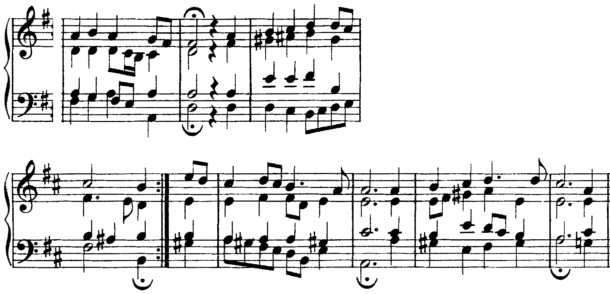

Il II grado reso maggiore: una dominante che non porta alla tonica ma al V. Con la settima, nei rivolti, in Bach; e il confine fra tonicizzare e modulare.
Si tratta della triade costruita sul secondo grado, solitamente minore, trasformata in una triade maggiore che è indicata come quinto del quinto (V/V) poiché svolge la funzione di dominante del V.
D. D’Urso, A. Odone, C. Bertolini, Il linguaggio della musica, 3° anno, p. 184
La dominante della dominante, 3° anno, pp. 184–186
Il libro arriva al V/V dalla discesa del basso verso il V con il IV grado alzato (4°♯), la sensibile della dominante, e ne dà i modelli da cantare. La tonicizzazione è definita a p. 135.
La dominante della dominante (V/V) è la triade maggiore costruita sul II grado: in do maggiore re–fa♯–la. Il IV grado alzato (fa♯) è la sensibile del V e sale al sol; l’accordo è una dominante secondaria (o applicata), riferita a un grado diverso dalla tonica. Si cifra V/V: il simbolo dopo la barra indica l’accordo a cui la dominante si riferisce.
D. D’Urso, A. Odone, C. Bertolini, Il linguaggio della musica, 3° anno, p. 184 e p. 135; 4° anno, pp. 112–113. C. Marenco, Manuale d’armonia, p. 91: re–fa♯–la «assolve alla funzione di triade del II grado con terza innalzata», con il fa♯ «che assume i tratti di sensibile secondaria di sol».
La falsa relazione: il fa naturale in una voce e il fa♯ in un’altra, in due accordi consecutivi. Il cromatismo si fa nella stessa voce: nell’esercizio di questa lezione il do–do♯ è nel basso alle bb. 3 e 10, nel contralto alle bb. 5–6 e 7–8. Nell’esempio qui sopra il problema non si pone: gli accordi che precedono il V/V non contengono il fa naturale. Gli altri due errori: raddoppiare il fa♯, che è una sensibile, e farlo scendere.
«In quanto accordo con funzione di dominante, il V/V prevede spesso l’aggiunta della settima (V7/V)» (3° anno, p. 184): la settima è la tonica, e scende di grado alla sensibile del V. Come il V7, si usa in tutti i rivolti: V65/V con il IV♯ al basso, che sale al V; V42/V con la tonica al basso, che scende al V6. Davanti al I64 di cadenza la sensibile secondaria sale alla quarta del I64, e la settima può restare ferma come nota comune.

La seconda frase del corale (bb. 3–6) è costruita su dominanti secondarie. Sul primo tempo della b. 3 il basso re porta mi–sol♯–si: è un V42/V, con la settima al basso, che però non va subito al V: scende a do♯ sotto un accordo di sensibile del VI (la♯) e al si del VI. Nella b. 4, dopo un’altra dominante secondaria (fa♯–la♯–do♯, la dominante del VI, che si studia nella lezione 3), il basso sale al sol♯: V6/V e, con la settima re nel soprano, V65/V. Il sol♯ sale al la della b. 5, e il soprano re scende al do♯: la risoluzione regolare.
Sul quarto tempo della b. 5 il V/V compare allo stato fondamentale (mi al basso) e porta alla semicadenza della b. 6. La terza frase lo riprende in primo rivolto (b. 7, sol♯ al basso), ma la frase chiude sul V con un II65, senza alterazione: la dominante della dominante e il II diatonico, nella stessa funzione, a due battute di distanza.
La tonicizzazione è «l’introduzione di un accordo attraverso la propria dominante o attraverso un accordo che svolga tale funzione, chiamato dominante secondaria» (3° anno, p. 135): il V diventa tonica per un istante, e la frase resta nella tonalità d’impianto. La tonicizzazione «agisce a livello locale»; la modulazione crea «uno spostamento più consistente verso la nuova tonalità, confermato, di solito, dalla presenza di una successione cadenzale di un certo rilievo» (4° anno, p. 112).
Alla b. 6 il basso tiene il do e sopra compare il fa♯: re–fa♯–la–do è un V42/V, e il do del basso scende al si del V6 (b. 7). Fin qui è una tonicizzazione del V. Ma la musica non torna al do: le bb. 7–11 restano nella regione di sol (IV42, II7, V7, I di sol) e chiudono con una cadenza perfetta. La successione cadenzale conferma la tonalità nuova: alle bb. 10–11 la stessa sensibile fa♯ fa parte di una modulazione alla dominante. Le cifre doppie (in alto do maggiore, in basso sol maggiore) dicono che dalla b. 7 gli accordi si leggono già nella tonalità d’arrivo; la modulazione ai toni vicini è la lezione 4.
Chiamare modulazione ogni alterazione. Un fa♯ isolato che porta al V e poi scompare è una tonicizzazione; si parla di modulazione solo se la tonalità nuova è confermata da una cadenza.
Il II grado reso maggiore, con il IV♯ (sensibile del V). La sensibile secondaria sale al V; la settima (la tonica) scende. Rivolti: V65/V (IV♯ al basso), V42/V (tonica al basso, va al V6). Il cromatismo nella stessa voce: niente falsa relazione.
La tonicizzazione sposta la tonica per un istante; la modulazione la sposta e lo conferma con una cadenza. Nel Preludio BWV 846 la b. 6 tonicizza, le bb. 10–11 modulano.
Per casa, un basso numerato di dodici battute in re maggiore, con tutte le forme del V/V. L’ora si chiude con il solfeggio parlato, cantato e ritmico, in fondo alla pagina. Lezione 2: il dettato del basso di un frammento a tre parti con le dominanti secondarie.
Compiti per la prossima volta
Realizza il basso numerato a quattro parti.
Sul quaderno, a matita. La foto del lavoro finito va su Classroom. Nel Workbook: apri l’esercizio C3-U4-L1-21 ↗
Compiti per la prossima volta
n. 188 e n. 189 parlato · n. 190 e n. 191 cantato · n. 192 e n. 193 ritmico
Ogni pezzo a tempo, senza fermarti: il parlato a nomi, il cantato prendendo il primo suono dalla tastiera, il ritmico battendo la pulsazione.
Scrivi la linea del basso sul quaderno, in chiave di basso: otto battute in 4/4, la minore. Il primo suono è la. Prima il riferimento, poi tutto due volte, ogni coppia di battute due volte, il collegamento 1–4, 3–6 e 5–8, e tutto per controllare.
Il riferimento: accordo di tonica e primo suono
Il dettato · otto battute
Le sezioni (riferimento, tutto, le coppie, il collegamento) si ascoltano una per una e si ripetono quanto serve; le fasi fanno la procedura della classe, con gli annunci e le pause, da qualunque punto.
Sul quaderno scrivi in testa la sigla C3-D-U04-L1. Si corregge all’inizio della prossima lezione.
Compiti per la prossima volta
Scrivi un contrappunto di seconda specie (due note contro una) sotto il canto fermo, in modo ionico (finale do): undici battute. Comincia su una consonanza perfetta, alla cadenza la sensibile sale alla finale, niente quinte e ottave consecutive.
Sul quaderno, con la sigla C3-CP-U04-L1 in testa; la foto va su Classroom.
Realizza a quattro parti il basso senza numeri: otto battute in 4/4, re minore. Trova tu l’accordo di ogni nota (la regola dell’ottava è il punto di partenza) e scrivilo sotto; poi il soprano, poi le voci interne. Accordi che puoi usare: le triadi principali in tutti i rivolti, la quarta e sesta di cadenza, il vii°6.
Sul quaderno, con la sigla C3-BD-U04-L1 in testa; la foto va su Classroom.
Armonizza a quattro parti il canto dato: otto battute in 4/4, mi minore. Prima le cadenze, poi il basso per intero, e solo alla fine contralto e tenore. Accordi che puoi usare: le triadi principali in tutti i rivolti, la quarta e sesta di cadenza, il vii°6.
Sul quaderno, con la sigla C3-CD-U04-L1 in testa; la foto va su Classroom.
Scritto: Un basso numerato di nove battute (Workbook, esercizio C3-U4-L1-21), sul quaderno; la foto va su Classroom. Solfeggio dal quaderno di lettura: parlato n. 188, 189; cantato n. 190, 191; ritmico n. 192, 193 (a tempo, senza fermarsi). Dettato C3-D-U04-L1 dalla pagina della lezione (sezioni da ascoltare, o le fasi della procedura guidata), sul quaderno con la sigla. Contrappunto di seconda specie sul canto fermo (C3-CP-U04-L1). Basso senza numeri da realizzare a quattro parti (C3-BD-U04-L1). Canto dato da armonizzare a quattro parti (C3-CD-U04-L1).
In classe
A nomi, a tempo, con la mano che batte. Chi si ferma riparte dalla battuta dopo.
Apri il n. 184 nel quaderno di lettura ↗ chiave di contralto · 4/4 · do maggiore
In classe
Si prende il tono dalla tastiera, si canta insieme; poi a gruppi.
Apri il n. 185 nel quaderno di lettura ↗ chiave di violino · 4/4 · fa maggiore
Apri il n. 186 nel quaderno di lettura ↗ chiave di violino · 3/4 · fa maggiore
In classe
Tutti insieme, battendo la pulsazione. Poi a file, due battute a testa.